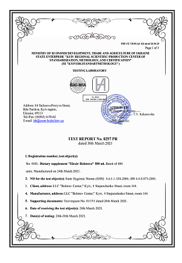
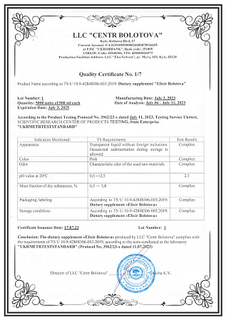
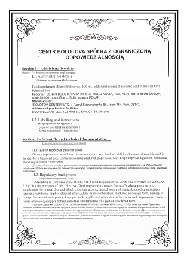
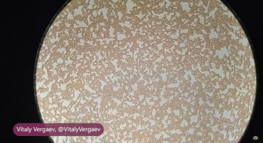

Naturalny suplement diety na bazie witaminy C.
Balzam Bolotova to suplement diety o unikalnym składzie, opracowany na podstawie receptury akademika Borisa Bołotowa. Stworzony dla osób, które chcą wspierać naturalne procesy organizmu i czuć się dobrze każdego dnia.

Naturalny suplement, który łatwo włączyć do codziennej diety jako element zrównoważonego stylu życia i zdrowego odżywiania.
Witamina C pomaga w prawidłowym funkcjonowaniu układu odpornościowego oraz w ochronie komórek przed stresem oksydacyjnym.*
Witamina C przyczynia się do prawidłowej produkcji kolagenu w celu zapewnienia prawidłowego funkcjonowania skóry.*
Witamina C pomaga w zmniejszeniu uczucia zmęczenia i znużenia oraz w prawidłowym metabolizmie energetycznym.*
* Dozwolone oświadczenia zdrowotne dotyczące witaminy C (Rozporządzenie (UE) nr 432/2012).
Starannie dobrane połączenie naturalnych składników jakości spożywczej, opracowane na podstawie wiedzy akademika Borisa Bolotova.
Naturalny składnik o łagodnym działaniu, źródło kwasów organicznych.
Regulator kwasowości stosowany w bezpiecznych, precyzyjnie określonych ilościach.
Regulator kwasowości zgodny z normami przemysłu spożywczego.
Skoncentrowany, bogaty w naturalne polifenole i antyoksydanty.
Wspiera odporność i przyczynia się do prawidłowej produkcji kolagenu.*
To precyzyjnie opracowana formuła — odpowiednie połączenie i proporcje składników. Zamiast wielu suplementów oferujemy jeden kompleksowy produkt.
Zamów Balzam Bolotova i włącz go do swojej codziennej rutyny.





Dokumenty potwierdzają pochodzenie receptury i ochronę marki Bołotow. Dostępne do wglądu.

gastroenterolog
„Jako specjalista podchodzę do suplementów z ostrożnością. Balzam Bolotova to starannie opracowany produkt na bazie naturalnych składników jakości spożywczej — dobrze skomponowany dodatek do codziennej diety.”

docent, terapia i medycyna rodzinna
„Balzam Bolotova to ciekawy i dostępny sposób na uzupełnienie codziennej diety o naturalne składniki. Doceniam przemyślaną recepturę i jakość produktu.”

specjalista medycyny ziołowej
„Balzam Bolotova zawiera naturalne składniki o starannie dobranych proporcjach. To produkt, za którym stoi wiedza i wieloletnie doświadczenie.”
Składniki jakości spożywczej w precyzyjnie dobranych proporcjach.
Wspiera odporność i ochronę komórek przed stresem oksydacyjnym.*
Witamina C wspiera prawidłową produkcję kolagenu dla skóry.*
Witamina C pomaga w zmniejszeniu uczucia zmęczenia i znużenia.*
Kompleksowa formuła zamiast wielu suplementów.
Łatwo włączyć do codziennej diety — okresowo lub regularnie.
* Dozwolone oświadczenia zdrowotne dotyczące witaminy C (Rozporządzenie (UE) nr 432/2012).
Dodaj 1 łyżeczkę balzamu do 150–200 ml wody, 2–3 razy dziennie podczas posiłku. Aby chronić szkliwo zębów, pij przez słomkę. Nie pij na pusty żołądek. Nie przekraczaj zalecanej dziennej porcji.
Pojemność butelki to 500 ml. Przy standardowym stosowaniu wystarcza na około 1–1,5 miesiąca.
Indywidualna nietolerancja składników, ciąża, karmienie piersią, wiek poniżej 18 lat, choroba wrzodowa i zapalenie żołądka w fazie zaostrzenia, podwyższona kwasowość żołądka, poważne choroby wątroby i nerek. Suplement diety, nie jest lekiem.
Jeśli przyjmujesz leki, zaleca się stosowanie balzamu 30–40 minut przed lub po zażyciu tabletek. W razie wątpliwości skonsultuj się z lekarzem.

Odbierz BEZPŁATNY przewodnik po systemie Bolotova — proste zasady odżywiania i stylu życia.